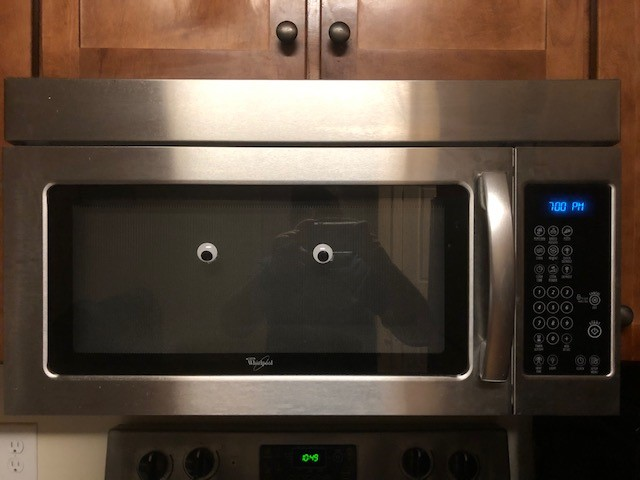
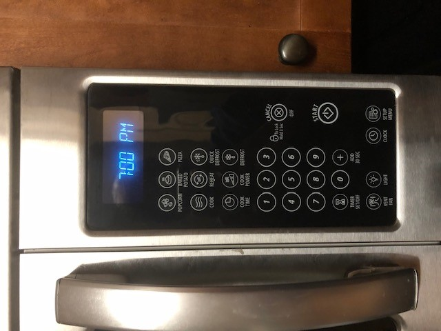

Answers for C:
Microwave Study Case



Design Issues
- The extra feature buttons are above the number pad, so the numbers are hidden at first glance
- Also, the number pad covers the same amount of space as the extra ones. The numbers should be
more prominent. - The button that controls the power is hidden among the extra features.
- The symbol on the start button is a stylized version for power when it should be more obvious.
- The timer button is in the corner and requires a little searching.